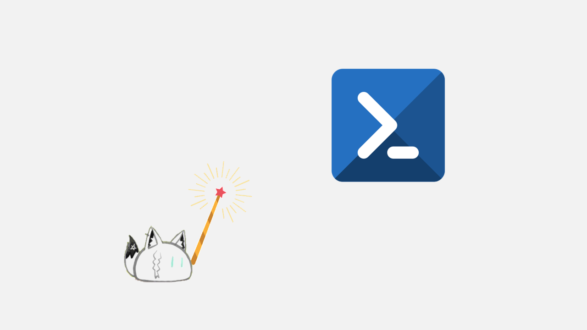
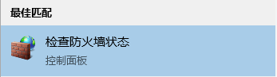
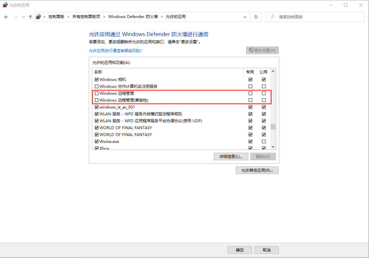

如何还原Enable-PSRemoting命令造成的更改？
关键词： 运维、Windows、安全配置
授权协议： CC BY-NC-SA 3.0，转载请标注来源

案例OS版本： Windows 10 1909 Pro Workstation（10.0.18363.0）
可用OS版本： Windows Server 2008 R2（Windows 7）+
不同OS版本操作可能有些许差异。
这个事件起源于一次对Hyper-V的远程调试……
当你需要访问一个位于内网上的Hyper-V服务器的时候，这条命令（Enable-PSRemoting）将会是你必须输入的内容。但在有些时候，“用完的东西必须归位”也是系统调试者需要遵守的重要法则。
遵循着这样的法则，Neko输入了应该正常关闭PowerShell Remoting的指令：
Disable-PSRemoting然后收到了PowerShell这样的“回答”：
WARNING: PowerShell remoting has been disabled only for PowerShell 6+ configurations and does not affect
Windows PowerShell remoting configurations. Run this cmdlet in Windows PowerShell to affect all PowerShell
remoting configurations.
WARNING: Disabling the session configurations does not undo all the changes made by the Enable-PSRemoting
or Enable-PSSessionConfiguration cmdlet. You might have to manually undo the changes by following these steps:
1. Stop and disable the WinRM service.
2. Delete the listener that accepts requests on any IP address.
3. Disable the firewall exceptions for WS-Management communications.
4. Restore the value of the LocalAccountTokenFilterPolicy to 0, which restricts remote access to
members of the Administrators group on the computer.是的，这条指令并不能达到“关闭 PowerShell Remoting”的 “真实”。它还需我们手动做四件事：
- 停止并禁用 WinRM（Windows Remote Management） 服务；
- 删除接受任何 IP 地址请求的侦听器；
- 禁用 “Windows 管理”通过Windows防火墙进行通讯；
- 将“本地帐户令牌筛选器”策略的值还原为 0，从而限制对计算机上的管理员组的成员；
但……
如果你按照微软给出的建议来行事，多半会迷失在错综复杂的WIndows调试菜单中，还会被其埋下的暗坑绊得狗啃泥。
那有没有能解决这个问题的方法呢？
当然有！因为……Neko已经帮你踩过了！
首先，我们需要改变一下行事的顺序：将第一件事和第二件事倒过来做。
否则，你将会得到OS给你的大礼包：
WSManFault
Message = 客户端无法连接到请求中指定的目标。 请验证该目标上的服务是否正在运行以及是否正在接受请求。 有关目标(通常是 IIS 或 WinRM)上运行的 WS 管理服务，请查阅日志和文档。 如果目标是 WinRM 服务，则在目标上运行以下命令来分析和配置 WinRM 服务: "winrm quickconfig"。
错误编号: -2144108526 0x80338012
客户端无法连接到请求中指定的目标。 请验证该目标上的服务是否正在运行以及是否正在接受请求。 有关目标(通常是 IIS 或 WinRM) 上运行的 WS 管理服务，请查阅日志和文档。 如果目标是 WinRM 服务，则在目标上运行以下命令来分析和配置 WinRM 服务: "winrm quickconfig"。是的，关闭的服务（程序）不能帮你完成任务。
Windows真香定律1：没有人能让不存在的东西为其行事，你也不例外
所以，我们要先做第二件事：删除接受任何 IP 地址请求的侦听器。
首先，输入以下指令删除监听器：
winrm delete winrm/config/listener?address=*+transport=HTTP再用下面的指令检查一下是不是删光了：
winrm enumerate winrm/config/listener这时候，我们才可以去关闭WinRM服务。
现在我们可以开始做“第一件事”了：
停止并禁用 WinRM（Windows Remote Management） 服务
关闭服务的时候要注意 “停止并关闭”，以免意外重启造成不必要的麻烦。

按图设置，务必一致
Windows真香定律2：完事记得要补刀，否则事后必被坑
那么接下来，
第三件事（禁用 “Windows 管理”通过Windows防火墙进行通讯）要如何处理呢？
首先在搜索中输入“防火墙”，然后选择结果中的“检查防火墙状态”；

然后在弹出的窗口左边的菜单栏中选择：

注意别点错
这时候选中右上角的“更改设置”，下面的窗口中的项目才能正常操作；
按图去除复选框内√即可

最后别忘了点确定保存更改；
现在我们到了最后一步：
将“本地帐户令牌筛选器”策略的值还原为 0，从而限制对计算机上的管理员组的成员。
这一步涉及到修改注册表（组策略），但萌新操作绝对会把注册表改坏：
所以，请直接将下面的东西内容复制到PowerShell内操作吧！
Set-ItemProperty -Path HKLM:\SOFTWARE\Microsoft\Windows\CurrentVersion\Policies\System -Name LocalAccountTokenFilterPolicy -Value 0 -Type DWord到这里，一切就大功告成了！
下面的部分是本次内容的进阶篇，
如果有兴趣，可自行前往相关页面看看：
Windows Remote Management | Microsoft Docs
Disable-PSRemoting | Microsoft Docs
LocalAccountTokenFilterPolicy | Microsoft Technet

猫 （By：かえるのこ） | Twitter：@_Yakan2gou
本文以CC BY-NC-SA 3.0协议发布，转载请标注来源。
本博客所有文章除特别声明外，均采用 CC BY-NC-SA 3.0 协议 ，转载请注明出处！